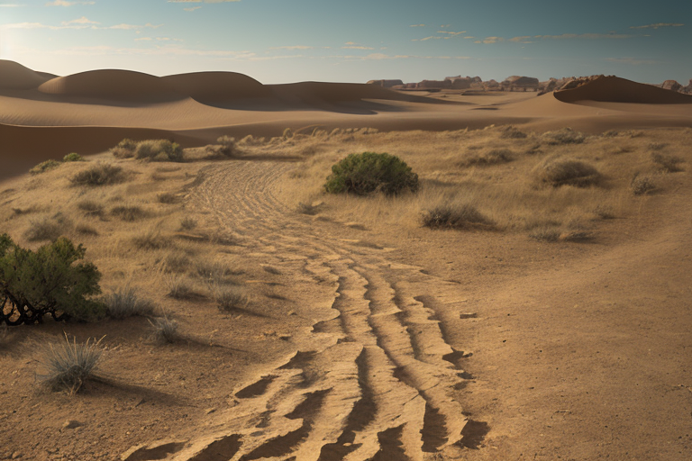
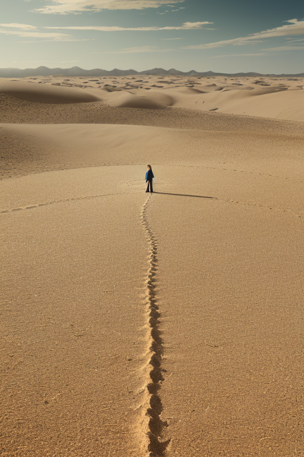
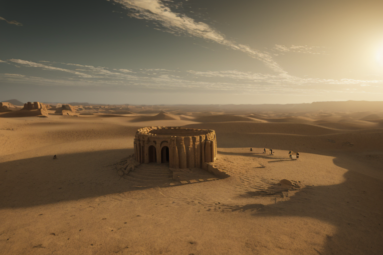
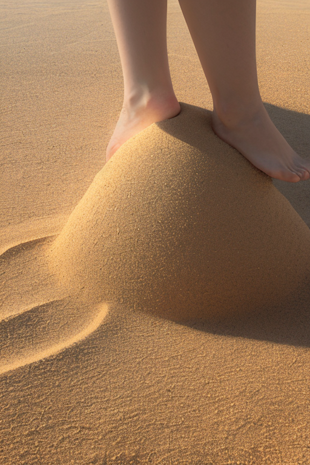
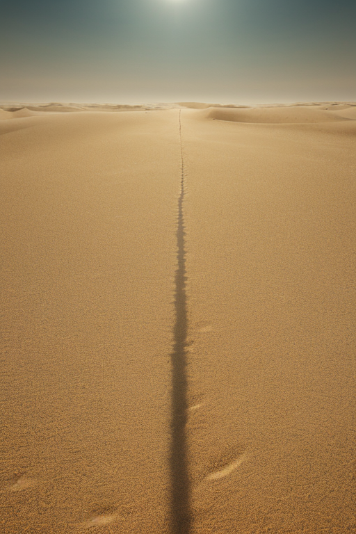

第一章 現実の鳥取
あなたはまだ気づいていない。この土地にも、王がいることを。
鳥取砂丘の砂は、今日も風に削られ、微細な波紋を描いては消える。観光客の足跡はやがて風に消され、地形は絶えず更新される。この砂の彼方、かつて鳥取城が聳えていた場所では、石垣だけが静かな歴史を刻んでいる。城は落ち、再建され、また焼け、今は静かな公園として市民に開かれている。その歴史の転換点の一つひとつ、落城の衝撃、再建の決意、焼失の無念。それらの「歪み」は、土地の記憶として沈殿し、時に微かに軋む。
その軋みを、孤高の王は一人で聴いている。トットリア・デザート。彼は砂丘の一角に立つ。感情を持たぬはずの調整者だが、この土地の繰り返される喪失と再生の密度が、彼の内に「何か」を育て始めていた。それは、果てしない砂の更新と、崩れてもまた積み上がる石垣の静かな意志に似ていた。
孤独は敵か味方か。彼にその問いはまだない。ただ、任務がある。乾燥した風が大地を過剰に削ろうとする「歪み」を、砂一粒の単位で調整する任務が。

第二章 歪みの兆候
砂の美術館の彫刻は、今年は「砂漠の文明」をテーマにしていた。緻密な砂の城壁が、訪れる者の吐息一つで崩れかねない危うさを内包しながら、静かに展示室を満たしている。トットリアはその一角に立っていた。彼の目は彫刻そのものではなく、そこに集う人々の間を、目に見えぬ乾いた「風」が通り抜けていく様を捉えていた。これは気象の乾燥ではない。心の、時代の乾燥だ。
かつて因幡の白兎が剥がされた皮のように、この地は歴史的に「剥がされる」経験を繰り返してきた。戦国時代、鳥取城は兵糧攻めによって徹底的に削り落とされた。その集積された喪失の「歪み」が、今、人と人との繋がりを脆くする乾燥波として現れ始めている。会話はすぐに途切れ、意図はすれ違う。些細な亀裂が、あっという間に修復不能な深い溝へと拡大する気配。
孤砂王は、掌に砂丘の紋章を浮かべた。砂色の光が微かに脈打つ。彼の役割は、この乾燥波そのものを消すことではない。崩壊の速度をほんの少し緩め、誤解が決定的になる一歩手前で、偶然の風向きを変えることだ。砂の彫刻の一部が崩れ落ち、観客から小さな嘆息が上がる。彼は無表情で、一粒の砂が別の場所へと転がる軌道を、見えない手でごくわずかに修正した。

第三章 王の葛藤
砂の美術館の彫刻は、乾燥による微細な亀裂を修復しながらも、全体としての崩壊を遅らせていた。孤砂王トットリアは、その全てを感知していた。彼の役割は、この「変革」そのものを止めることではない。過剰な乾燥がもたらす急激な崩壊を、制御可能な「風化」の速度に調整することだ。
「王。このままでは、『砂像』という形態そのものが失われます」
デザリアの声は、砂が擦れるように乾いていた。
「承知している」
彼は答えた。掌上の紋章が、砂丘の起伏を映す。大山から流れ下る清冽な水脈の情報、三朝温泉の微量なラドン、二十世紀梨の果樹園を潤す朝露の量。全てのデータが、この乾燥波が自然の摂理から外れた「歪み」であることを示していた。しかし、その歪みが、古い形態を崩し、新たな何かを生み出す「変革」の端緒でもあるなら――。
彼は孤独に耐えることを選んできた。無駄な干渉を排し、直線的に任務を遂行する。それが孤高の王国の在り方だった。だが今、問われているのは、その孤独が変革をただ傍観する「無関心」に堕していないか、ということだ。砂丘は、風という孤独な作用によって、絶えず形を変える。彼は、風になるべきか、変わらぬ基盤になるべきか。
紋章が熱を帯びた。彼は決断した。崩壊を止めはしない。しかし、その先に何も生まれない「無」の崩壊にはさせない。一粒の砂の軌道を変え、ほんの少しだけ、新たな形を成す可能性へと導く。

第四章 妖精との対話
砂の美術館の展示室は、新たな砂像の制作前でがらんとしていた。デザリアは、砂の粒子を掌の上で静かに転がしながら語り始めた。
「変革は、常に崩壊の危険を伴います。この砂像も、展示が終われば崩され、元の砂に戻る。それは無情に見える。しかし、王よ、この砂は『無』に戻るわけではありません。次の形を成すための素材として、ここに留まっている。変革が『無』を生むか、『可能性』を生むか。その分水嶺は、調整の一撃にある」
孤砂王は黙って聞く。彼女の言葉は、砂丘が風に削られることと、新たな風紋が生まれることの、紙一重の違いを説いていた。
「あなたの孤独は、無関心ではありません。変革の熱に流されず、その本質を見極めるための、必要な距離です。しかし、距離を保ち続けるだけでは、砂丘は風化してただ散るだけ。一粒の砂が、次の像の『礎』になる瞬間を、選び取らなければ」
彼女は掌を傾け、砂粒を床へと落とした。一粒が転がり、静止する。その一点が、やがて巨大な砂像の中心となる最初の定位点だ。

第五章「微調整と余韻」
鳥取城跡から見下ろす町に、異様な乾燥した風が渦巻き始めた。歴史の転換点。大火の気配が、砂丘から吹き上げる砂塵のように、町全体を覆おうとしていた。孤砂王トットリアは、砂丘の頂でその全てを感知していた。彼の王国の力は、この一点を「燃え広がらない炎」へと微調整すること。しかし代償は、この地に蓄積された「人々の熱気」、すなわち変革のエネルギーそのものを、百年分の乾燥した風に変えて吸収することだ。
「選択を。」デザリアの声は風の音と同化していた。
孤独は敵か。味方か。彼は常に距離を保ってきた。しかし今、距離を保つことは、この町の「熱」を見殺しにすることに等しい。彼は目を閉じた。砂丘の砂が、一斉に静止した。
次の瞬間、歴史はほんの少しだけ曲がった。大火は起こらず、人々は気づかぬまま明日を迎える。代わりに、鳥取の地には百年に一度という乾いた風が吹き抜け、砂丘は一時的に巨大化し、その後、ゆっくりと元の姿へと戻っていった。王はその全ての「熱」を一身に受け、感情という重みに初めて押し潰されそうになった。彼はただ、砂丘の上に立ち、消えゆく熱の余韻を、孤独という器で抱きしめ続けた。
あなたの町にも、王がいる。